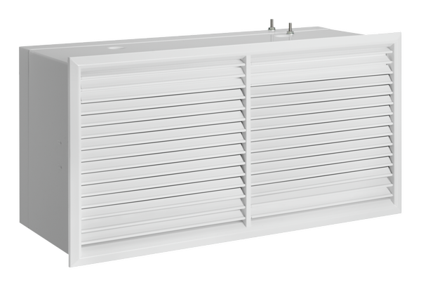

- Применение
- Чистые помещения, фармацевтика, медицина, лаборатории и технологические зоны.
- Классы чистоты
- ISO 5–8.
- Монтаж
- Настенное исполнение с доступом со стороны чистой зоны.
- Контроль
- Возможность контроля перепада давления и проверки герметичности.
- Воздухораспределение
- Совместимо с решётками X-GRILLE modular.